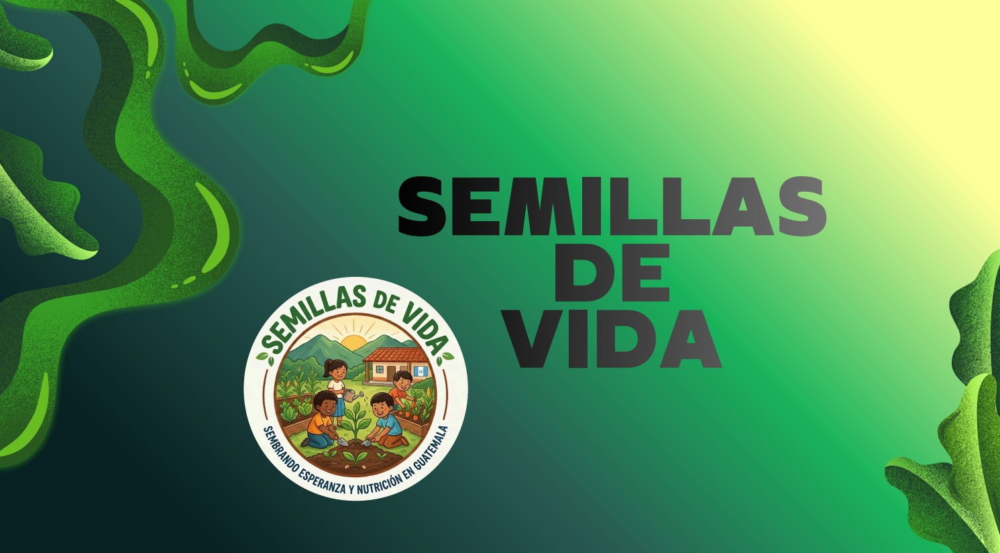
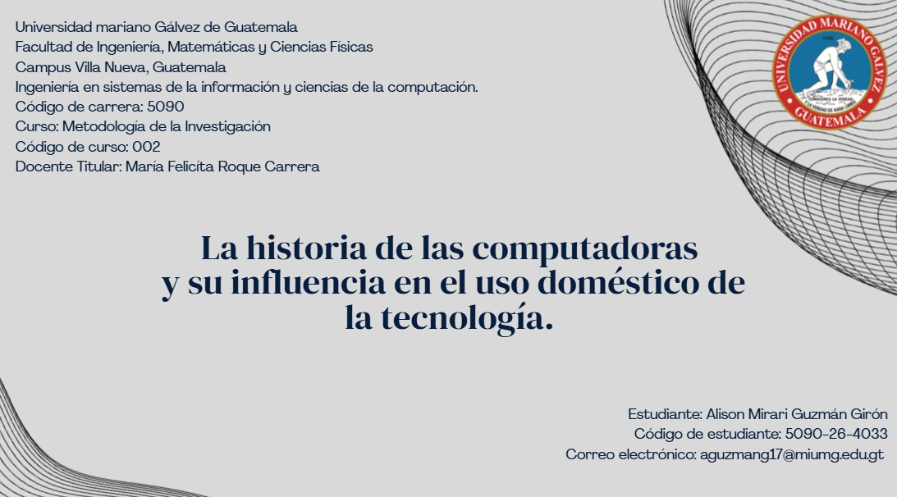
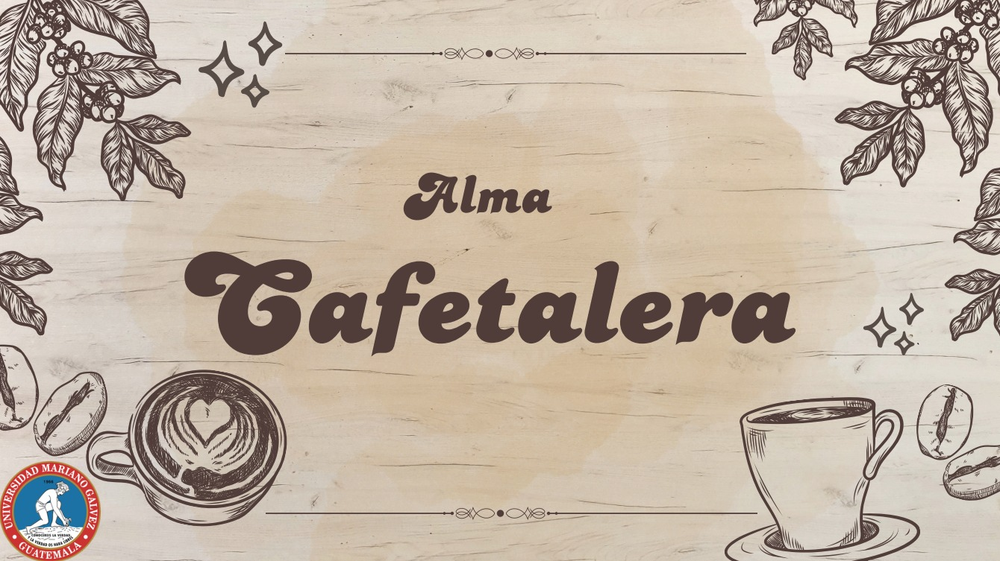
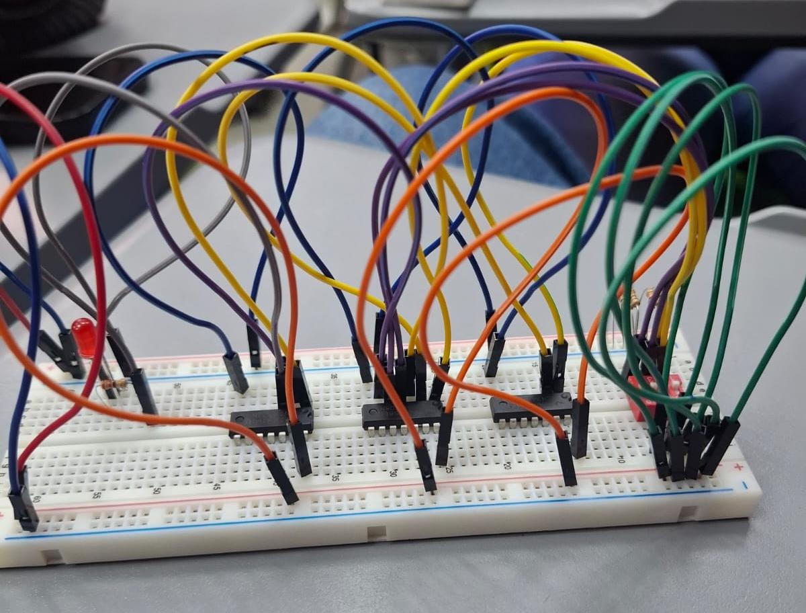
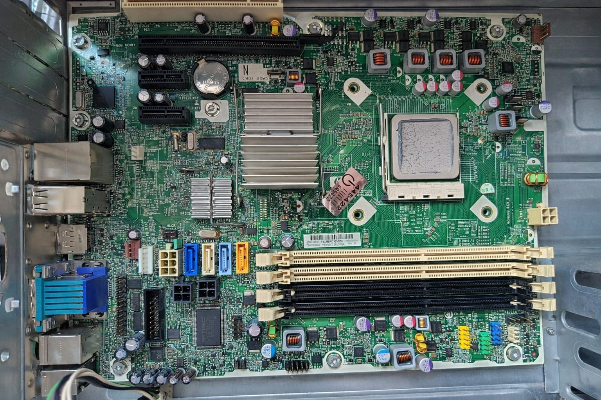
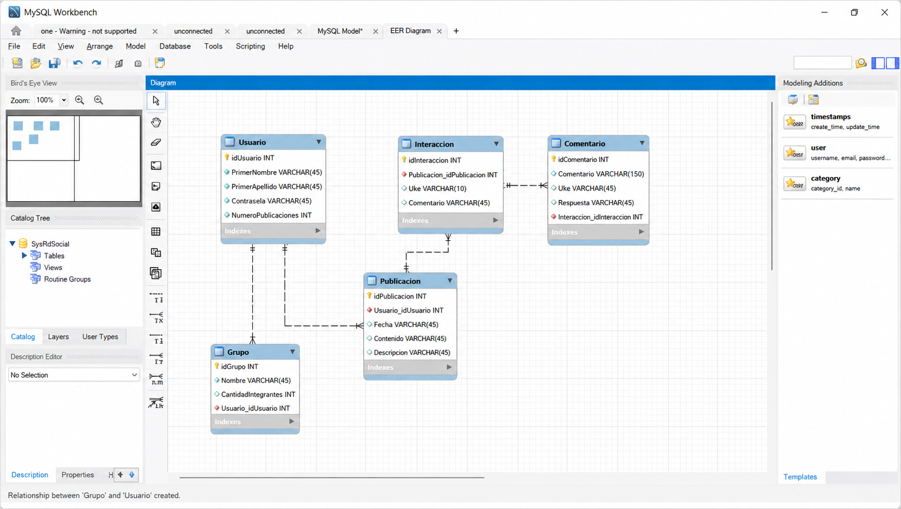

Desarollo humano
Primer proyecto
Se realizo un único proyecto grupal en el que simulamos ayudar orfanatos guatemaltecos, a dicha campaña se le elaboro un documento de Word formal con cosas como la introducción, la justificación el presupuesto, ets.. también se realizó una exposición donde se explico la idea del proyecto y como se llevó a cabo (hipotéticamente)

Metodologia de la investigacion
Primer proyecto
En Metodología de la Investigación, trabajamos en un proyecto único que se desarrolló a lo largo de todo el semestre. Este consistió en elaborar una tesis, paso a paso, siguiendo la estructura correcta. El documento se redactó de forma individual; sin embargo, para finalizar el proyecto, realizamos una exposición grupal en un salón independiente. Como parte del trabajo de campo grupal, encuestamos a varios alumnos para nuestra muestra y entrevistamos a catedráticos. Fuera de estas actividades colaborativas, el resto del proceso fue individual.

Contabilidad I
Primer proyecto
En contabilidad se realizó un único proyecto para punteo de zona el cual se realizo en grupos de 5, para este proyecto tuvimos que crear una empresa ficticia en nuestro caso se realizo una empresa de café guatemalteco y de dicha empresa se realizaron las operaciones contables, la misión, objetivos, ets.. y por ultimo se paso a exponer en clase una presentación de dicha empresa.

Logica de sistemas
Primer proyecto
En lógica de sistemas como proyecto formal solo se realizo uno y fue de algebra de Boole y lógica booleana, se nos proporciono un caso el cual se tenia que resolver a partir de los temas vistos en clases, con la respuesta de dicho problema se pasa a un simulador de circuito digital para luego hacerlo de manera física y presentarle a la licencia dicho proyecto, por último, se envía a la plataforma el documento formal sobre el caso a resolver.

Introdiccion a los sitemas de computo
Primer proyecto
En este realizamos un mantenimiento preventivo a una computadora de escritorio, fue un proyecto grupal en que aprendimos del mantenimiento preventivo y correctivo.
Segundo proyecto
Este proyecto se trabajo de manera individual la instalación de una maquina virtual y un sistema operativo, en ese caso fue un distro de Linux, Ubuntu.
Tercer proyecto
En este realizamos cables de red, se llevaron los materiales y en clase procedimos con la explicación y a armarlos, realizamos un cabre cruzado y uno directo y fue un proyecto individual.

Cuarto proyecto
Este fue un proyecto grupal en el que utilizamos un Swtich, aprendimos de su funcionamiento y compartimos archivos con los integrantes de nuestro grupo.
Quinto proyecto
Este proyecto fue individual y se trabajo en el programa de Cisco Paket Traicer, realizamos una local área network donde conectábamos tres computadoras a un Switch.
Sexto proyecto
Por último en este proyecto se realizo una base de datos en My SQL y utilizamos XAMP y Php myadmin, se trabajo la base de datos de una tienda, una librería y una red social.
